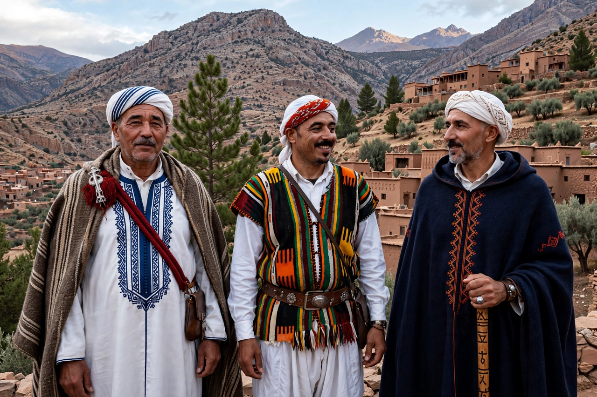

Berbers
From Wikipedia, the free encyclopedia

Berbers, or Amazigh (singular Amazigh, 'free people'), are the indigenous peoples of North Africa, inhabiting the region from Morocco's Atlantic coast to Egypt's Siwa Oasis and from the Mediterranean to the Niger bend, mainly in Morocco and Algeria. Numbering perhaps 30–40 million, they speak Berber languages of the Afroasiatic family, have historically been farmers, pastoralists and trans-Saharan traders, and in recent decades have won growing recognition (Amazigh is an official language in Morocco since 2011 and in Algeria since 2016; the Yennayer new year is now a public holiday in both).
History
Berber kingdoms (Numidia under Masinissa, Mauretania) dealt with Carthage and Rome as allies and enemies; Berbers produced Roman emperors' ancestors, the church father Augustine of Hippo, and the resistance of Jugurtha and Tacfarinas. Islamised from the seventh century, Berber dynasties — Almoravids, Almohads, Marinids — ruled the Maghreb and al-Andalus, while the Arabisation of the plains pushed Amazigh language and identity into mountains, deserts and oases.
Identity and revival
The Berber Spring (1980, Kabylia) and the 2001 Black Spring launched a cultural-political movement for language rights, secularism and recognition; the Amazigh flag (blue-green-yellow with the red yaz) flies across the region, Tifinagh script signage spreads, and the New Year (Yennayer, from the ancient agrarian calendar) became an official holiday in Algeria (2018) and Morocco (2024). Diaspora communities in France and the Netherlands sustain the culture's European wing.